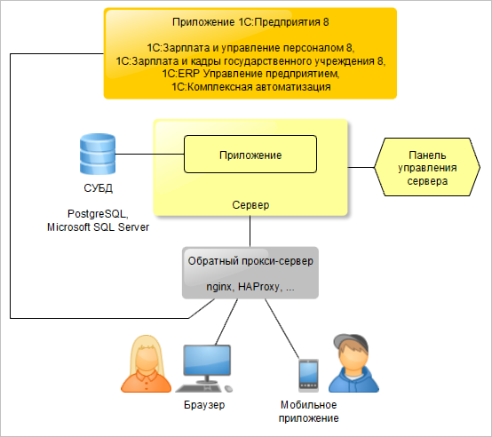

Общая схема работы «1С:Кабинета сотрудника»
Общая схема работы «1С:Кабинета сотрудника» выглядит следующим образом:

Центральным компонентом системы является сервер.
Сервер исполняет приложение, которое реализует всю прикладную функциональность. Приложение использует внешнюю СУБД для хранения своих данных.
- «1С:Зарплата и управление персоналом 8»;
- «1С:Зарплата и кадры государственного учреждения 8»;
- «1С:ERP Управление предприятием»;
- «1С:Комплексная автоматизация».
Из этих приложений «1С:Кабинет сотрудника» получает списки сотрудников, а также данные, необходимые для ответа на запросы сотрудников.
Как правило сотрудники находятся во внешней сети и подключаются к «1С:Кабинету сотрудника» через Интернет. Чтобы такое подключение было безопасным, используется обратный прокси-сервер, который транслирует запросы пользователей серверу и наоборот.
Для работы с «1С:Кабинетом сотрудника» сотрудники могут использовать браузер или мобильное приложение.
Администраторы приложения используют панель управления сервера. Она позволяет настраивать как сам сервер, так и приложения, исполняющиеся на нем.